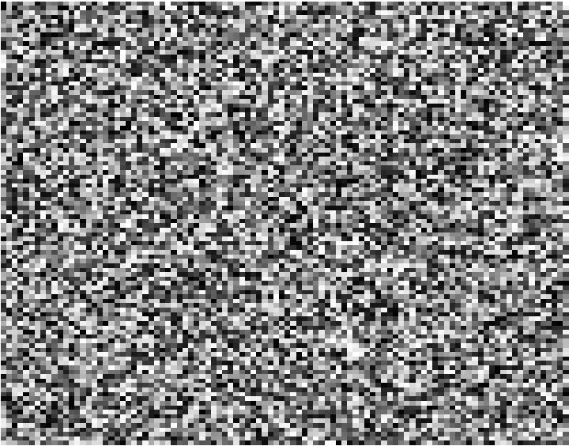
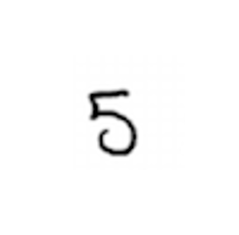
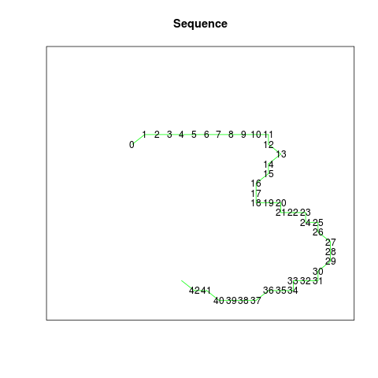
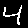
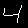
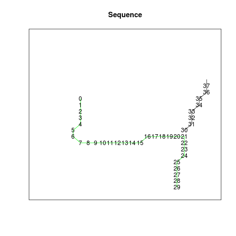
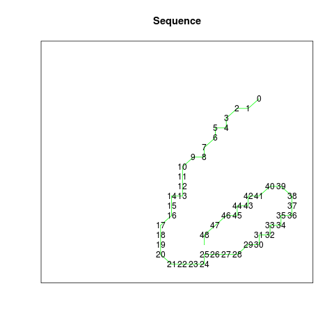
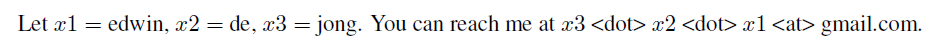

The MNIST handwritten digit data set is widely used as a benchmark dataset for regular supervised learning. While a 2-D image of a digit does not look complex to a human being, it is a highly inefficient way for a computer to represent a handwritten digit; only a fraction of the pixels are used. Furthermore, there is a lot of regularity in digits that is not exploited by a 2-D image encoding; all digits consist of continuous line segments, produced by pen strokes.
| A random 2-d image | A handwritten digit |
|  |  |
A random 2-D image vs a hand-written digit
The number of 2-D images is astronomical; even for a small binary 28x28 thumbnail (the size of the MNIST images), the number of possible images is 228x28 = 2784 = 10236; incomparably bigger than the number of atoms in the universe (1080). In fact, 16x16 binary images already provide enough combinations to give each atom in the universe its own unique QR code!
Given that digits are produced by pen strokes, a sequence of pen offsets is a much more natural and efficient way to capture the essence of handwritten digits, as it relates more closely to the process that generated the data; each data point in such a sequence directly corresponds to a one-pixel movement of the pen.
A suitable representation greatly improves the effectiveness of machine learning algorithms. Since sequences are a natural representation for handwritten tokens, I was curious to see how well current sequence learning algorithms are able to learn to predict and classify digits represented as stroke sequences.
To figure this out, as a first step I transformed the MNIST data set to pen stroke sequences that could have generated the skeletons of the digits. The goal was not per se to reconstruct as closely as possible what stroke the pen has followed (though estimating that more accurately could improve the potential for classification accuracy), but to identify pen stroke sequences that closely approximate the skeleton of the digits.
##Approach
To extract the pen stroke sequences, the following steps are performed:
- Incremental thesholding. Starting from the original MNIST grayscale image, the following characteristics are measured
– The number of nonzero pixels
– The number of connected components, for both the 4-connected and 8-connected variants. Starting from a thresholding level of zero, the thresholding level is increased stepwise, until either (A) the number of 4-connected or 8-connected components changes, (B) the number of remaining pixels drops below 50% of the original number, or (C) the thresholding level reaches a preselected maximum level (250). When any of these conditions occur, the previous level (i.e.~the highest thresholding level for which none of these conditions occurred) is selected.
-
A common method for image thinning known as Zhang-Suen is applied.
-
After the thresholding and thinning steps, the result is a skeleton of the original digit image that mostly consists of single-pixel-width lines.
-
Finding a pen stroke sequence that could have produced the digit skeleton can be viewed as a Traveling Salesman Problem where, starting from the origin, all points of the digit skeleton are visited. Each point is represented by the pen offset (dx, dy) from the previous to the current point. For any transition to a non-neighboring pixel (based on 8-connected distance), an extra step is inserted with (dx, dy) = (0, 0) and with eos = 1 (end-of-stroke), to indicate that the current stroke has ended and the pen is to be lifted off the paper. At the end of each sequence, a final step with values (0, 0, 1, 1) is appended. The fourth value represents eod, end-of-digit. This final tuple of the sequence marks that both the current stroke and the current sequence have ended, and forms a signal that the next input presented to the network will belong to another digit.
Examples
MNIST training image no. 25:
| Source image | Thresholded | Thinned | Sequence |
 |
 |
 |
 |
MNIST training image no. 12:
| Source image | Thresholded | Thinned | Sequence |
|  |
MNIST training image no. 2:
| Source image | Thresholded | Thinned | Sequence |
 |
 |  |  |
The data set aims to provide a consistent set of sequences, meaning that similar images should result in similar sequences. The choices made by the algorithm will sometimes differ from the choices made by humans who write digits; the figure ‘4’ above is an example. After the downward and rightward stroke, the TSP algorithm prefers to continue with the downward stroke, and then draw the remaining upper part of the rightmost line in the upward direction. Most humans would probably stop instead, and draw the rightmost line as a single stroke in one go. This reflects differences in the criteria or preferences that are optimized in selecting between different options. For the purpose of providing a consistent data set for sequence learning, any set of criteria used to guide these choices could be used in principle, as long the choices are made consistently and as long as the complexity of the resulting sequences is minimized.
MNIST training image no. 13:
| Source image | Thresholded | Thinned | Sequence |
|  |
Sequence data file format
The files contain four columns:
- dx and dy represent the movement in the horizontal and vertical direction, where the positive y direction is downward. The implicit starting point is (0, 0). In the example for the figure ‘6’ (training image 13, see sequence below), the first line shows that the sequence starts at ( 0 + 18, 0 + 4), i.e. 18 points to the right from the top-left corner and 4 steps down. The next point is 1 step to the left (-1) and 1 step down (1), which gets us to (17, 5).
- The third column (end-of-stroke, eos) is 1 when a point is the last point of a stroke, i.e. the pen will be lifted from the paper after that point.
- The fourth column (end-of-digit, eod) is 1 for the last point of the entire sequence.
The corresponding code project contains R functions for visualizing the sequences.
Sequence for MNIST training image 13 (see figure ‘6’ above, see complete sequence here):
| dx | dy | eos | eod |
|---|---|---|---|
| 18 | 4 | 0 | 0 |
| -1 | 1 | 0 | 0 |
| -1 | 0 | 0 | 0 |
| -1 | 1 | 0 | 0 |
| 0 | 1 | 0 | 0 |
| -1 | 0 | 0 | 0 |
| 0 | 1 | 0 | 0 |
| -1 | 1 | 0 | 0 |
| 0 | 1 | 0 | 0 |
| -1 | 0 | 0 | 0 |
| . | . | . | . |
Sequence learning benchmark
This sequence learning data set can be used for at least two different types of sequence learning challenges:
- Sequence prediction, i.e. predicting the stroke sequences themselves:
- Given step k of a sequence, predict step k + 1. If the steps of a length n sequence are numbered from 1 to n, then steps 1 to n-1 are presented sequentially as inputs, and steps 2 to n must be predicted, feeding and predicting one step at a time.
- After presenting a sequence, the first step of the next sequence will be fundamentally unpredictable, assuming the sequences are presented in a random order, and does not form part of the prediction problem, as the above description implies. The RMSE over all predicted sequence steps in the test data, i.e. all steps excluding the first steps of the sequences, is one example of a suitable error measure for performance reporting. For training the model, other loss functions may be more suitable.
- Sequence classification, i.e. predicting the digit class given the stroke sequence:
- The sequence is received either step by step, or (for systems that can deal with variable length sequences as input) in one go.
- Once the entire sequence is received, the task is to predict the digit class ( 0 to 9 ). For this problem, the test error rate (% of test data sequences classified incorrectly), as used for the regular MNIST benchmark, is a suitable error measure. To facilitate this prediction problem type, target data files are provided that include a binary (one-hot) representation of the digit class.
If you obtain results with this data set for either of these problems, or another variant, I’m happy to include them in an overview on this page; see contact info below.
Code
The code that was used to create this data set is available here
Download
Sequences: sequences.tar.gz
Thinned images: digit-images-thinned.tar.gz
Terms of Use
The MNIST stroke sequence dataset is made available under the terms of the Creative Commons Attribution-Share Alike 3.0 license.
The MNIST stroke sequence data set is a derivative work of the MNIST dataset. Yann LeCun (Courant Institute, NYU) and Corinna Cortes (Google Labs, New York) hold the copyright of the MNIST dataset, which is a derivative work from original NIST datasets.
Contact
Please feel free to contact me for any questions or comments. My email is the 3 parts of my name in reverse order:
